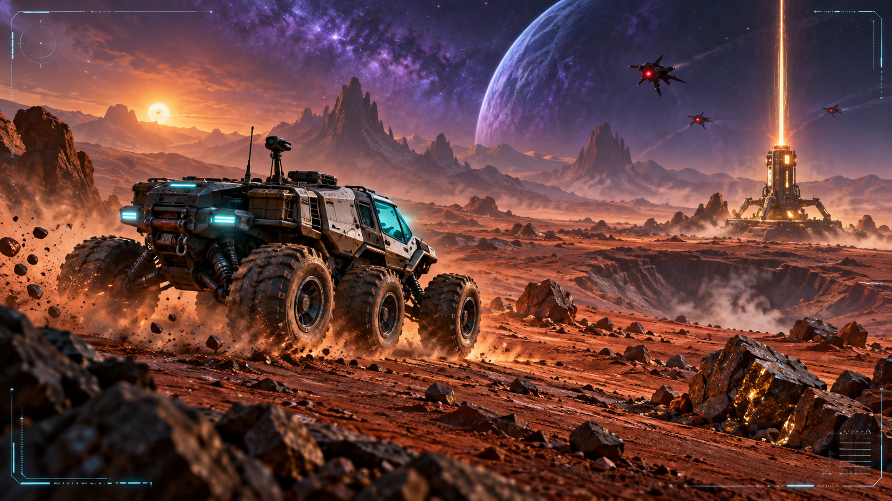

Featured build
Crater Basin
Crater Basin
— Tanks V3
A wide-open 3D tank sandbox in an otherworldly basin. Drive, aim, collect pickups, and test the battlefield.

Explore
Built for a little more curiosity.

Tibertron's Space Buggy
A futuristic buggy sent to alien planets to recover resources.

Tibertron Space Buggy V2
Modern rover mission prototype with hills, craters, destructible rocks, enemies, and resource extraction.
Magic Screen Pro
A larger drawing lab with layers, symmetry, and visual effects.
250th Founding Records
Browse official Founders Online records by anniversary date.
 Games
GamesPlay the collection.
Current games, previews, classics, builders, and an archive kept in clear view.